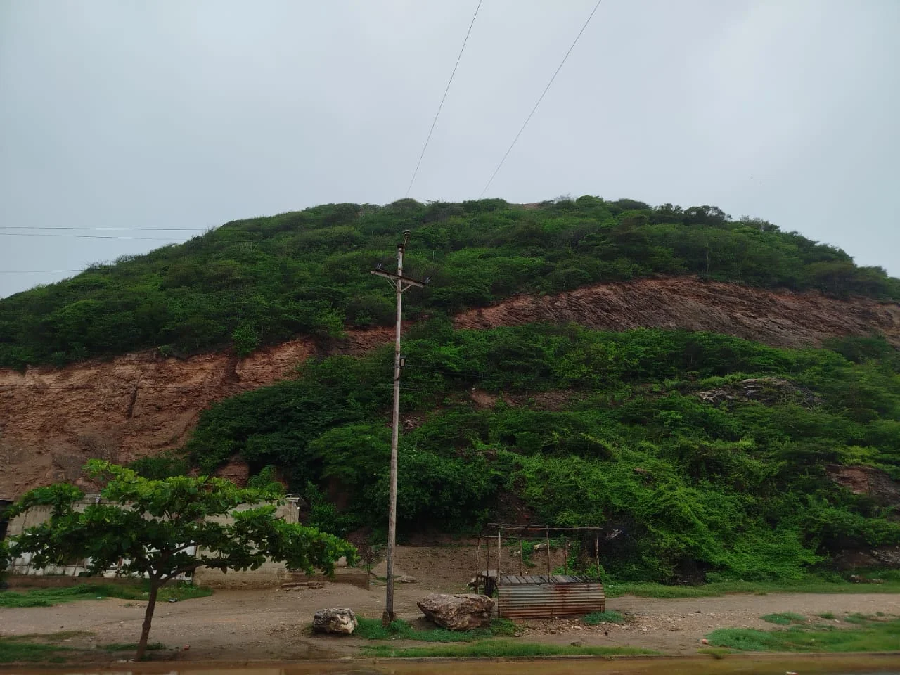

La Pica, un cerro ubicado en el sector Francisco de Miranda de El Morro de Puerto Santo, se erige como un punto de referencia natural y paisajístico en la vía nacional que conecta Carúpano con Río Caribe.


Su ubicación hace que sea inevitable para cualquier viajero que transite la carretera, ofreciendo una vista que captura la esencia costera de la región. Desde sus alturas, se despliega ante los ojos un vasto panorama del pueblo, la costa, las brillantes aguas del mar Caribe y la continuidad de las verdes montañas. Para aquellos dispuestos a aventurarse, el ascenso a la Pica se realiza a través de un camino rural que, aunque un poco arduo en su recorrido, es completamente accesible. El esfuerzo se ve recompensado al llegar a la cima, donde la colina se allana, proporcionando una base perfecta para contemplar el horizonte.

Cómo Llegar
El acceso a la Pica comienza en el sector Francisco de Miranda de El Morro de Puerto Santo. A pocos metros de la entrada, se debe encontrar un sendero discreto que se abre entre las casas; este es el punto de partida del camino rural que conduce directamente a la cima.
Mejores Días
Se recomienda subir en días de clima cálido y despejado. Es fundamental evitar el mal tiempo o la lluvia, ya que el sendero se vuelve dificultoso. Un día soleado asegura una caminata más segura y permite apreciar la vista panorámica en su máxima expresión.
¿Por Qué Visitarla?
La Pica es el lugar ideal para los amantes de las aventuras senderísticas. La caminata, aunque ardua, se ve recompensada por una vista espectacular que abarca casi la totalidad de El Morro de Puerto Santo, el pueblo y la inmensidad del mar Caribe.
La Pica
Curiosamente, la Pica presenta una característica distintiva, funcionando como una especie de "doble cerro": sobre ella se levanta otra colina de menor tamaño, añadiendo una capa más a la topografía del lugar. Esta configuración eleva aún más el punto de observación sobre el entorno circundante. La vista que se obtiene desde la Pica es, sin duda, su mayor atractivo. Las múltiples imágenes capturan la magnitud de este espectáculo: una impresionante panorámica que abarca casi la totalidad de El Morro de Puerto Santo. Se puede apreciar la disposición de las viviendas a lo largo de la costa, con sus techos coloridos contrastando con el azul profundo del océano y el verde intenso de la vegetación montañosa. Desde este mirador natural, el pueblo se presenta como un mosaico vibrante y tranquilo, enmarcado por la línea de playa y las formaciones montañosas que se sumergen en el mar a lo lejos.
La Pica no es solo una elevación geográfica; es un balcón natural que ofrece una de las perspectivas más completas y hermosas de la zona. Es un testimonio de la belleza indómita de la costa venezolana, invitando a lugareños y visitantes a realizar una pequeña caminata para ser testigos de esta espectacular convergencia de mar, montaña y comunidad.
